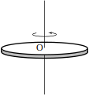

1 Introduction
Figure 8 :

Figure 8 shows a lamina which is allowed to rotate about an axis perpendicular to the plane of the lamina and through O. The moment of inertia about this axis is a measure of how difficult it is to rotate the lamina. It plays the same role for rotating bodies that the mass of an object plays when dealing with motion in a line. An object with large mass needs a large force to achieve a given acceleration. Similarly, an object with large moment of inertia needs a large turning force to achieve a given angular acceleration. Thus knowledge of the moments of inertia of laminas and of solid bodies is essential for understanding their rotational properties.
In this Section we show how the idea of integration as the limit of a sum can be used to find the moment of inertia of a lamina.